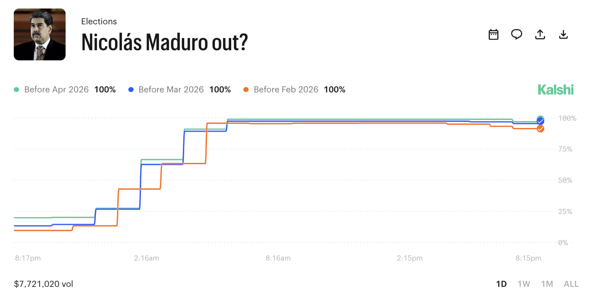
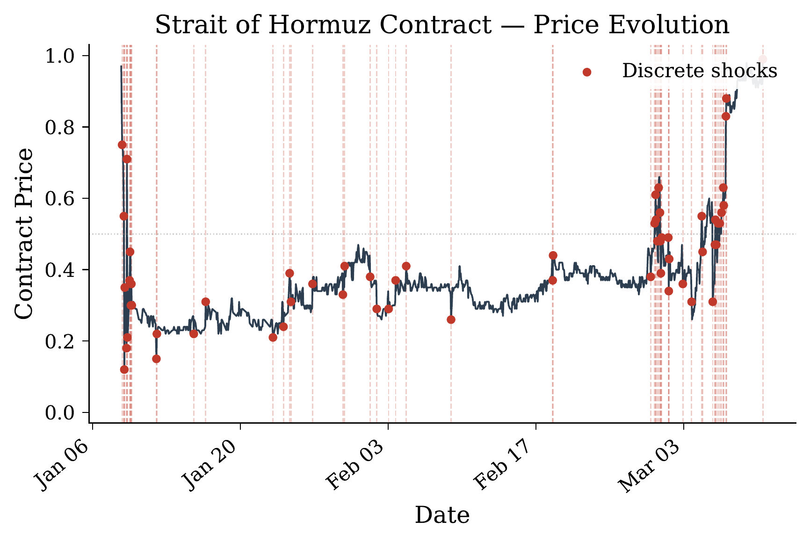
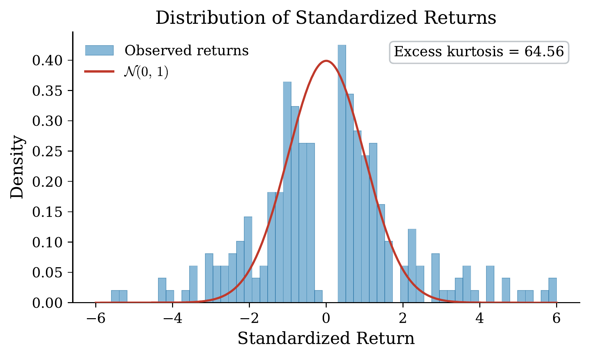
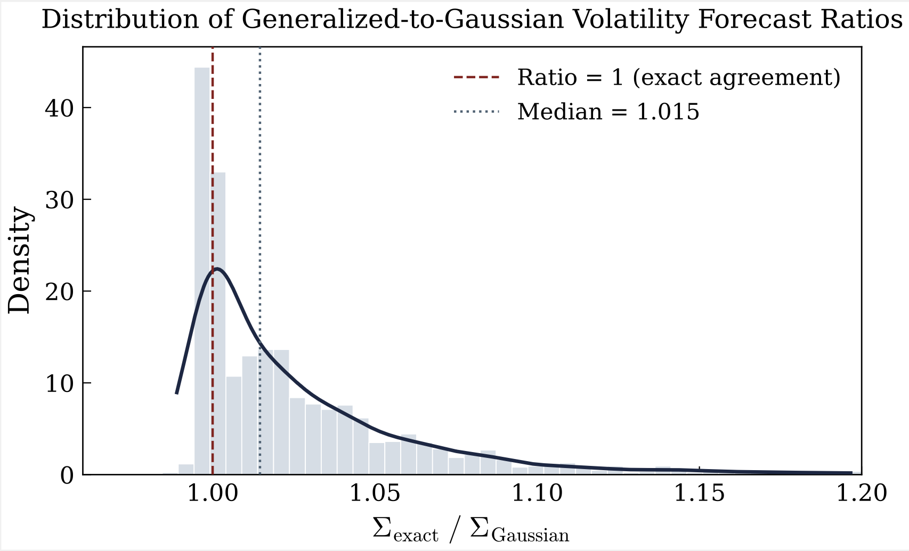
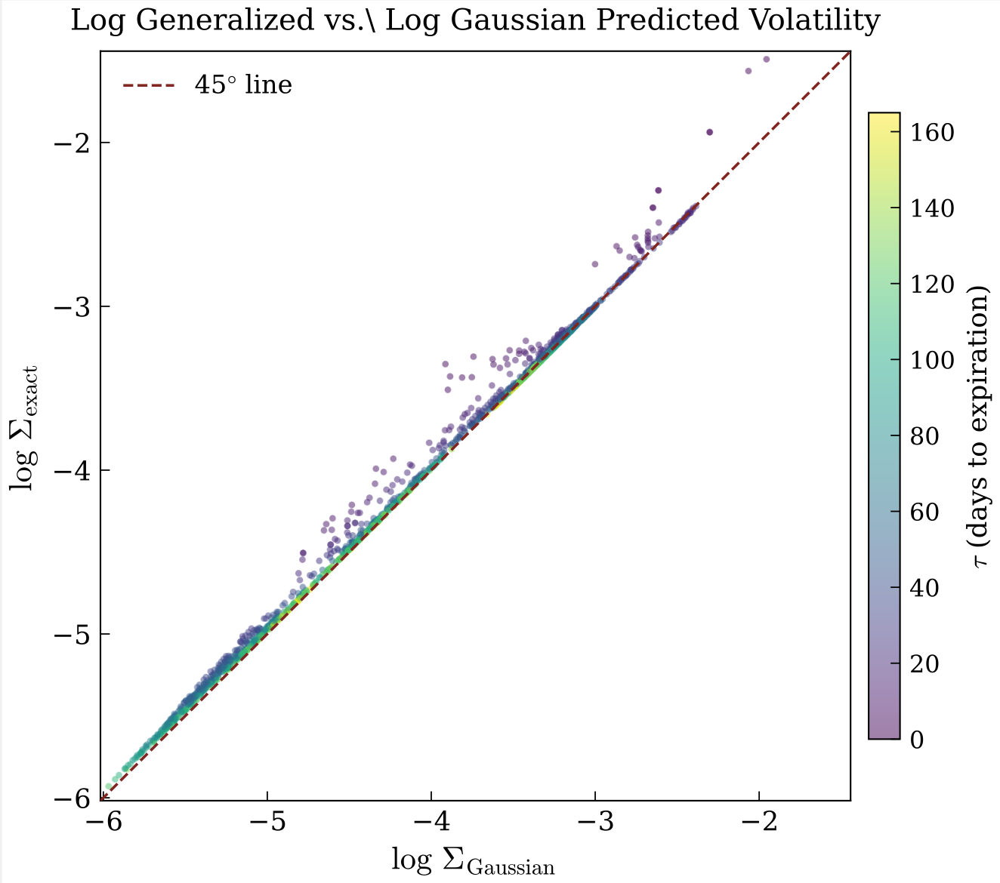

A shock in one market ripples across the financial system

Archak & Ipeirotis (2008) derived a volatility expression that depends only on the current contract price and time to expiration, not past returns. Their model outperforms GARCH for prediction markets, but assumes pure diffusion with no jumps. They explain the relationship between volatility, time, and price.


Market shocks are visible in the data. Returns exhibit heavier tails than a Gaussian as extreme moves occur far more often than a normal model would predict. This excess kurtosis is direct evidence of a jump-diffusion process, motivating the compound Poisson extension we develop to capture both smooth evolution and discrete shocks.
Ideally, we could simply find the mean and variance of S(T) \mid \mathcal{F}_t, standardize, and arrive at a closed-form price. But this assumes S(T) is normally distributed — exactly the simplification our framework is meant to move beyond.
Why it breaks down:
We resolve this by conditioning on a fixed number of jumps. If we know exactly how many jumps occur, the only remaining randomness comes from Brownian motion — which is Gaussian. This gives us a tractable conditional distribution:
We then sum over all possible jump counts, weighted by their Poisson probabilities. The result is the generalized contract price:
The infinite sum converges rapidly since p(n;\,\lambda\tau) has n! in its denominator, which grows much faster than the numerator. We truncate at
covering four standard deviations from the Poisson mean, over 99.99% of the distribution's mass.
To derive instantaneous volatility via Ito's formula, we need the partial derivatives of \pi(t, S) with respect to S and t. Since \pi(t) is an infinite sum, we differentiate term by term using the known relationships \frac{d\Phi}{dx}(x) = \phi(x) and \frac{d\phi}{dx}(x) = -x\,\phi(x).
With the drift eliminated by the martingale property, the instantaneous variance of d\pi is composed of two parts: a continuous (diffusion) component and a jump component.
1. Smoothness. The function \pi(t, S) = \Phi(Z(t,S)) is twice continuously differentiable (C^2) on the domain \{(t,S) : 0 \leq t < T,\; S \in \mathbb{R}\}.
2. Bounded jumps. There exists a constant M > 0 such that |\Delta \tilde{J}(t)| \leq M, where \Delta \tilde{J} denotes the compensated jump size.
3. Negligible higher-order terms. The bound M is sufficiently small that the third-order Taylor remainder satisfies |R_3| \leq \frac{M_3}{6}M^3 < 0.01, where M_3 = \sup_{|x - S| \leq M} |\partial^3 \pi / \partial S^3(t,x)|.
We empirically evaluate the model's volatility expression on historical data from Kalshi and Polymarket. We test across three market types that capture varying degrees of Brownian diffusion and Poisson shock contributions.
Before assessing how well our volatility expressions predict observed volatility, we first verify that the Gaussian closed-form approximation closely matches the generalized expression derived in the exact proposition.
| Statistic | Value |
|---|---|
| Median | 1.015 |
| Mean | 1.033 |
| Std. dev. | 0.063 |
| 25th percentile | 1.000 |
| 75th percentile | 1.040 |
| Within 1% of 1.0 | 43.7% |
| Within 5% of 1.0 | 80.0% |
| Within 10% of 1.0 | 93.1% |


These results justify using the Gaussian closed-form \Sigma = \phi(Z)/\sqrt{\tau} in the regression analysis that follows. The approximation error is small, concentrated at short expiration horizons, and directionally predictable (slight underestimation). Given the significant computational cost of the generalized alternative, the Gaussian expression is the most practical choice — and as we show next, it performs remarkably well as a primary predictor for observed volatility.
We regress log absolute returns on the log of our model-implied volatility to test how accurately the closed-form expression explains observed volatility.
| Market | N | \beta | SE | 95% CI |
|---|---|---|---|---|
| Fed Funds Rate | 6,045 | 0.967 | 0.021 | [0.927, 1.008] |
| Geopolitics | 1,113 | 1.057 | 0.136 | [0.798, 1.325] |
| Premier League | 4,654 | 0.978 | 0.083 | [0.816, 1.141] |
Questions?
We begin by expanding the difference process S(t) = S_1(t) - S_2(t):
dS(t) = dS_1(t) - dS_2(t) = (\mu_1 dt + \sigma_1 dW_1 + dJ_1) - (\mu_2 dt + \sigma_2 dW_2 + dJ_2) = (\mu_1 - \mu_2) dt + (\sigma_1 dW_1 - \sigma_2 dW_2) + (dJ_1 - dJ_2)
The problem with the expression above is dJ_1 - dJ_2 is not a martingale, since the jump processes may have different nonzero expected drifts over time. We want the stochastic component of the model to be a martingale. If it were not, we would have some expectation about the direction of randomness. Therefore, we compensate the Poisson term by separating it into its expected drift, which may be nonzero if, for example, positive shocks are larger or more frequent than negative ones, and the remaining unpredictable variation. (See Appendix A for details):
d\tilde{J}_i = dJ_i - \lambda_i \mu_{J_i} dt, \quad \text{so that} \quad \mathbb{E}[d\tilde{J}_i] = 0
Substituting and collecting drift terms:
dS(t) = (\mu_1 - \mu_2 + \lambda_1\mu_{J_1} - \lambda_2\mu_{J_2}) dt + (\sigma_1 dW_1 - \sigma_2 dW_2) + (d\tilde{J}_1 - d\tilde{J}_2) = \mu dt + \sigma dW + d\tilde{J}
Where:
Note: σ and W derivations shown in Appendix B.
Integrating from t to T. By the Markov property, \pi(t) = \mathbb{P}(S(T) > 0 \mid S(t)). Integrating:
S(T) = S(t) + \int_t^T \mu dt + \int_t^T \sigma dW + \int_t^T d\tilde{J} = S(t) + \mu\tau + \sigma(W(T)-W(t)) + (\tilde{J}(T)-\tilde{J}(t))
where \tau = T - t. We now expand the compensated jump increment. By definition:
\tilde{J}_i(T) - \tilde{J}_i(t) = \sum_{k=1}^{N_i(\tau)} Y_{i,k} - \lambda_i\mu_{J_i}\tau
where N_i(\tau) \sim \text{Poisson}(\lambda_i\tau) counts the number of party-i jumps in [t,T] and Y_{i,k} \sim \mathcal{N}(\mu_{J_i}, \sigma_{J_i}^2) are i.i.d. jump sizes. Since \tilde{J} = \tilde{J}_1 - \tilde{J}_2:
\tilde{J}(T) - \tilde{J}(t) = \left(\sum_{k=1}^{N_1(\tau)} Y_{1,k} - \lambda_1\mu_{J_1}\tau\right) - \left(\sum_{j=1}^{N_2(\tau)} Y_{2,j} - \lambda_2\mu_{J_2}\tau\right)
Substituting into S(T), the \lambda_1\mu_{J_1}\tau terms from drift and compensation cancel. This leaves:
S(T) = S(t) + (\mu_1 - \mu_2)\tau + \sigma(W(T)-W(t)) + \sum_{k=1}^{N_1(\tau)} Y_{1,k} - \sum_{j=1}^{N_2(\tau)} Y_{2,j}
Note that the drift is now (\mu_1 - \mu_2)\tau, not \mu\tau: the expected jump contributions have been absorbed into the raw jump sums, which carry their own means. ∎
From the Lemma, the terminal ability difference is:
S(T) = S(t) + (\mu_1 - \mu_2)\tau + \sigma(W(T)-W(t)) + \sum_{k=1}^{N_1(\tau)} Y_{1,k} - \sum_{j=1}^{N_2(\tau)} Y_{2,j}
where N_i(\tau) \sim \text{Poisson}(\lambda_i\tau) are independent and Y_{1,k} \sim \mathcal{N}(\mu_{J_1}, \sigma_{J_1}^2), Y_{2,j} \sim \mathcal{N}(\mu_{J_2}, \sigma_{J_2}^2) are i.i.d. jump sizes.
Conditioning on (N_1=n_1, N_2=n_2). The number of jumps from each party is random, which prevents S(T)|\mathcal{F}_t from being Gaussian. We condition on (N_1=n_1, N_2=n_2), fixing the number of jump sizes. Conditional on these counts, the remaining random components are:
Since a sum of independent Gaussian random variables is Gaussian:
S(T) \mid \mathcal{F}_t, N_1=n_1, N_2=n_2 \sim \mathcal{N}(m_{n_1,n_2}, v_{n_1,n_2})
where
\begin{aligned} m_{n_1,n_2} &= S(t) + (\mu_1-\mu_2)\tau + n_1\mu_{J_1} - n_2\mu_{J_2} \\ v_{n_1,n_2} &= \sigma^2\tau + n_1\sigma_{J_1}^2 + n_2\sigma_{J_2}^2 \end{aligned}
Standardizing. Since the conditional distribution is Gaussian:
\mathbb{P}(S(T)>0|\mathcal{F}_t, N_1=n_1, N_2=n_2) = \Phi(Z_{n_1,n_2})
where Z_{n_1,n_2} = \frac{m_{n_1,n_2}}{\sqrt{v_{n_1,n_2}}} and \Phi is the standard normal CDF.
Averaging over all jump count pairs. By the law of total probability:
\pi(t) = \sum_{n_1=0}^{\infty} \sum_{n_2=0}^{\infty} p(n_1;\lambda_1\tau) \, p(n_2;\lambda_2\tau) \, \Phi(Z_{n_1,n_2})
where p(n;\lambda) = \frac{e^{-\lambda}\lambda^n}{n!} is the Poisson probability mass function. ∎
We differentiate the exact price formula with respect to S(t). Recall:
\pi(t) = \sum_{n_1=0}^{\infty} \sum_{n_2=0}^{\infty} p(n_1;\lambda_1\tau) \, p(n_2;\lambda_2\tau) \, \Phi(Z_{n_1,n_2})
where Z_{n_1,n_2} = \frac{S(t) + (\mu_1-\mu_2)\tau + n_1\mu_{J_1} - n_2\mu_{J_2}}{\sqrt{\sigma^2\tau + n_1\sigma_{J_1}^2 + n_2\sigma_{J_2}^2}}.
Delta (First Derivative):
\frac{\partial \pi}{\partial S} = \sum_{n_1=0}^{\infty} \sum_{n_2=0}^{\infty} p(n_1;\lambda_1\tau) \, p(n_2;\lambda_2\tau) \, \frac{\varphi(Z_{n_1,n_2})}{\sqrt{v_{n_1,n_2}}}
where \varphi(z) = \frac{1}{\sqrt{2\pi}}e^{-z^2/2} is the standard normal PDF and v_{n_1,n_2} = \sigma^2\tau + n_1\sigma_{J_1}^2 + n_2\sigma_{J_2}^2.
Gamma (Second Derivative):
\frac{\partial^2 \pi}{\partial S^2} = \sum_{n_1=0}^{\infty} \sum_{n_2=0}^{\infty} p(n_1;\lambda_1\tau) \, p(n_2;\lambda_2\tau) \, \frac{-Z_{n_1,n_2} \varphi(Z_{n_1,n_2})}{v_{n_1,n_2}}
These follow from differentiating \Phi(z), which yields \varphi(z), and applying the chain rule. ∎
We apply Itô's formula for jump-diffusion processes to \pi(t) = \pi(t, S(t)):
d\pi = \frac{\partial \pi}{\partial t} dt + \frac{\partial \pi}{\partial S} dS + \frac{1}{2}\frac{\partial^2 \pi}{\partial S^2} (dS)^2 + \sum_{j} [\pi(\cdot+Y_j)-\pi(\cdot)] dN_j
Continuous component: From the diffusion part of dS, the quadratic variation is (dS)^2 = \sigma^2 dt (to first order), yielding a continuous volatility contribution:
\Sigma_d^2 dt = \left(\frac{\partial \pi}{\partial S}\right)^2 \sigma^2 dt
Jump component: The two Poisson terms (party 1 and party 2 jumps) contribute:
\Sigma_J^2 dt = \lambda_1 E\left[(\pi(S+Y_1)-\pi(S))^2\right] dt + \lambda_2 E\left[(\pi(S-Y_2)-\pi(S))^2\right] dt
Total Volatility: Combining both contributions and taking square roots:
\Sigma_{\text{exact}}(t) = \sqrt{\left(\frac{\partial \pi}{\partial S}\right)^2 \sigma^2 + \lambda_1 E[(\pi(S+Y_1)-\pi(S))^2] + \lambda_2 E[(\pi(S-Y_2)-\pi(S))^2]}
∎
Under the Gaussian approximation, we treat the total volatility as deterministic and use the compensated form from Appendix C. The terminal difference becomes:
S(T) = S(t) + \mu \tau + \sigma_{\text{total}} (W(T)-W(t))
where
\begin{aligned} \mu &= (\mu_1 - \mu_2 + \lambda_1 \mu_{J_1} - \lambda_2 \mu_{J_2}) \\ \sigma_{\text{total}}^2 &= \sigma^2 + \lambda_1 \sigma_{J_1}^2 + \lambda_2 \sigma_{J_2}^2 \end{aligned}
Conditional on \mathcal{F}_t, we have S(T) \sim \mathcal{N}(\mu', (\sigma_{\text{total}})^2\tau) where \mu' = S(t) + \mu\tau. Standardizing:
Z = \frac{S(T) - 0}{\sigma_{\text{total}}\sqrt{\tau}} = \frac{S(t) + \mu\tau}{\sigma_{\text{total}}\sqrt{\tau}}
Therefore:
\pi(t) = \mathbb{P}(S(T) > 0 \mid \mathcal{F}_t) = \Phi(Z) = \Phi\left(\frac{S(t) + \mu\tau}{\sigma_{\text{total}}\sqrt{\tau}}\right)
∎
We differentiate \pi(t) = \Phi(Z) where Z = \frac{S(t) + \mu\tau}{\sigma_{\text{total}}\sqrt{\tau}}. Using the key relationships:
Delta: Using the chain rule,
\frac{\partial \pi}{\partial S} = \frac{d\Phi}{dZ} \cdot \frac{\partial Z}{\partial S} = \varphi(Z) \cdot \frac{1}{\sigma_{\text{total}}\sqrt{\tau}}
Gamma: Differentiating again,
\frac{\partial^2 \pi}{\partial S^2} = \frac{\partial}{\partial S}\left[\varphi(Z) \cdot \frac{1}{\sigma_{\text{total}}\sqrt{\tau}}\right] = \frac{d\varphi}{dZ} \cdot \left(\frac{1}{\sigma_{\text{total}}\sqrt{\tau}}\right)^2 = \frac{-Z\varphi(Z)}{\sigma_{\text{total}}^2 \tau}
Theta: We differentiate with respect to time t. Note that \tau = T - t, so \frac{\partial}{\partial t} = -\frac{\partial}{\partial \tau}. The quotient rule and chain rule give:
\frac{\partial \pi}{\partial t} = \varphi(Z) \left[\frac{\mu}{Z\sigma_{\text{total}}\sqrt{\tau}} - \frac{Z}{2\tau}\right]
∎
Under risk-neutral valuation, the price process \pi(t, S(t)) must be a martingale. We apply Itô's formula to verify this.
d\pi = \left(\frac{\partial \pi}{\partial t} + \mu \frac{\partial \pi}{\partial S} + \frac{1}{2}\sigma^2\frac{\partial^2 \pi}{\partial S^2}\right) dt + \sigma \frac{\partial \pi}{\partial S} dW + \text{Jump terms}
Continuous component drift: The drift term is the bracket in parentheses above. For a martingale, we require:
\frac{\partial \pi}{\partial t} + \mu \frac{\partial \pi}{\partial S} + \frac{1}{2}\sigma^2\frac{\partial^2 \pi}{\partial S^2} = 0
Jump component drift: The expected drift from party i jumps is:
\mathbb{E}[\pi(S+Y_i) - \pi(S)] \, \lambda_i dt
Under the risk-neutral measure, this is also zero on average (jump risk premium is priced into the initial condition). Combining continuous and jump components, the total drift of d\pi is zero, confirming that \pi(t) is a martingale. ∎
In the Gaussian approximation, \pi(t) = \Phi(Z(t)) where Z(t) = \frac{S(t) + \mu\tau}{\sigma_{\text{total}}\sqrt{\tau}}. Applying Itô's formula:
d\pi = \varphi(Z) \, dZ + \text{higher order terms}
The dynamics of Z are driven by dS (the Brownian and jump components). The diffusion volatility of Z is:
\Sigma_d = \frac{\sigma}{\sigma_{\text{total}}} \cdot \frac{\varphi(Z)}{\sqrt{\tau}}
The jump volatility contributions from both parties sum to:
\Sigma_J^2 = (\lambda_1 + \lambda_2) \sigma_J^2 \cdot \left(\frac{\varphi(Z)}{\sigma_{\text{total}}\sqrt{\tau}}\right)^2
where \sigma_J^2 is an effective jump variance. Combining both contributions:
\Sigma_{\text{total}}^2 = \varphi(Z)^2 \left[\frac{\sigma^2 + (\lambda_1+\lambda_2)\sigma_J^2}{\sigma_{\text{total}}^2}\right] \cdot \frac{1}{\tau}
Since the bracketed term equals 1 under our normalization, we obtain:
\Sigma_{\text{total}}(t) = \frac{\varphi(\Phi^{-1}(\pi(t)))}{\sqrt{T-t}}
This shows that volatility is maximized when \pi(t) = 0.5 (i.e., Z=0) and decreases toward the boundaries as the probability approaches 0 or 1. ∎
The raw jump process J_i(t) = \sum_{k=1}^{N_i(t)} Y_{i,k} where N_i(t) \sim \text{Poisson}(\lambda_i t) has expectation \mathbb{E}[J_i(t)] = \lambda_i t \, \mu_{J_i}. Thus, J_i(t) is not a martingale (it has drift \lambda_i \mu_{J_i}).
To isolate the martingale (unpredictable) component, we subtract the compensator:
\tilde{J}_i(t) = J_i(t) - \lambda_i \mu_{J_i} t
Now, \mathbb{E}[\tilde{J}_i(t)] = \mathbb{E}[J_i(t)] - \lambda_i \mu_{J_i} t = 0, so \tilde{J}_i(t) is a martingale. This allows us to decompose the dynamics into predictable drift (which may be priced under risk-neutral measure) and unpredictable martingale noise. ∎
Given two correlated Brownian motions W_1, W_2 with correlation \rho_{12}, we form the linear combination:
U = \sigma_1 W_1 - \sigma_2 W_2
The variance of U is:
\operatorname{Var}[U] = \sigma_1^2 + \sigma_2^2 - 2\rho_{12}\sigma_1\sigma_2
Define \sigma = \sqrt{\operatorname{Var}[U]} and the normalized process:
W = \frac{U}{\sigma} = \frac{1}{\sigma}(\sigma_1 W_1 - \sigma_2 W_2)
Then W is a standard Brownian motion (variance 1) and:
\sigma_1 W_1 - \sigma_2 W_2 = \sigma W
This shows that the combined diffusion in S(t) can be written in terms of a single Brownian motion W with coefficient \sigma. ∎
For a single compensated jump process, \tilde{J}_i(t) = J_i(t) - \lambda_i \mu_{J_i} t. The variance is:
\operatorname{Var}[\tilde{J}_i(T) - \tilde{J}_i(t)] = E\left[\left(\sum_{k=1}^{N_i(\tau)} Y_{i,k} - \lambda_i\mu_{J_i}\tau\right)^2\right]
Expanding and using the properties of the Poisson process:
= E\left[\left(\sum_{k=1}^{N_i(\tau)} Y_{i,k}\right)^2\right] - (E[\sum Y_{i,k}])^2 = \operatorname{Var}\left[\sum_{k=1}^{N_i(\tau)} Y_{i,k}\right]
By the law of total variance:
\operatorname{Var}\left[\sum Y_{i,k}\right] = E[N_i(\tau)] \operatorname{Var}[Y_i] + \operatorname{Var}[N_i(\tau)] (E[Y_i])^2 = \lambda_i\tau(\sigma_{J_i}^2 + \mu_{J_i}^2)
Therefore:
\operatorname{Var}[\tilde{J}_i(\tau)] = \lambda_i\tau(\sigma_{J_i}^2 + \mu_{J_i}^2)
For the difference \tilde{J}(t) = \tilde{J}_1(t) - \tilde{J}_2(t), using independence of the two Poisson streams:
\operatorname{Var}[\tilde{J}(\tau)] = \lambda_1\tau(\sigma_{J_1}^2 + \mu_{J_1}^2) + \lambda_2\tau(\sigma_{J_2}^2 + \mu_{J_2}^2)
∎
The exact price formula sums over all possible jump count pairs (n_1, n_2). Below are the first several terms:
\begin{aligned} \pi(t) &= p(0;\lambda_1\tau)p(0;\lambda_2\tau) \Phi(Z_{0,0}) \\[6pt] &\quad + p(1;\lambda_1\tau)p(0;\lambda_2\tau) \Phi(Z_{1,0}) \\[6pt] &\quad + p(0;\lambda_1\tau)p(1;\lambda_2\tau) \Phi(Z_{0,1}) \\[6pt] &\quad + p(1;\lambda_1\tau)p(1;\lambda_2\tau) \Phi(Z_{1,1}) \\[6pt] &\quad + p(2;\lambda_1\tau)p(0;\lambda_2\tau) \Phi(Z_{2,0}) \\[6pt] &\quad + \cdots \end{aligned}
where each term weights the conditional price \Phi(Z_{n_1,n_2}) by the probability of observing exactly n_1 party-1 jumps and n_2 party-2 jumps. The standardized terminal difference for each pair is:
Z_{n_1,n_2} = \frac{S(t) + (\mu_1-\mu_2)\tau + n_1\mu_{J_1} - n_2\mu_{J_2}}{\sqrt{\sigma^2\tau + n_1\sigma_{J_1}^2 + n_2\sigma_{J_2}^2}}
For a practical implementation, the sum is truncated at some maximum number of jumps (e.g., N_{\max} = 20) since the Poisson probabilities decay rapidly for large n. ∎